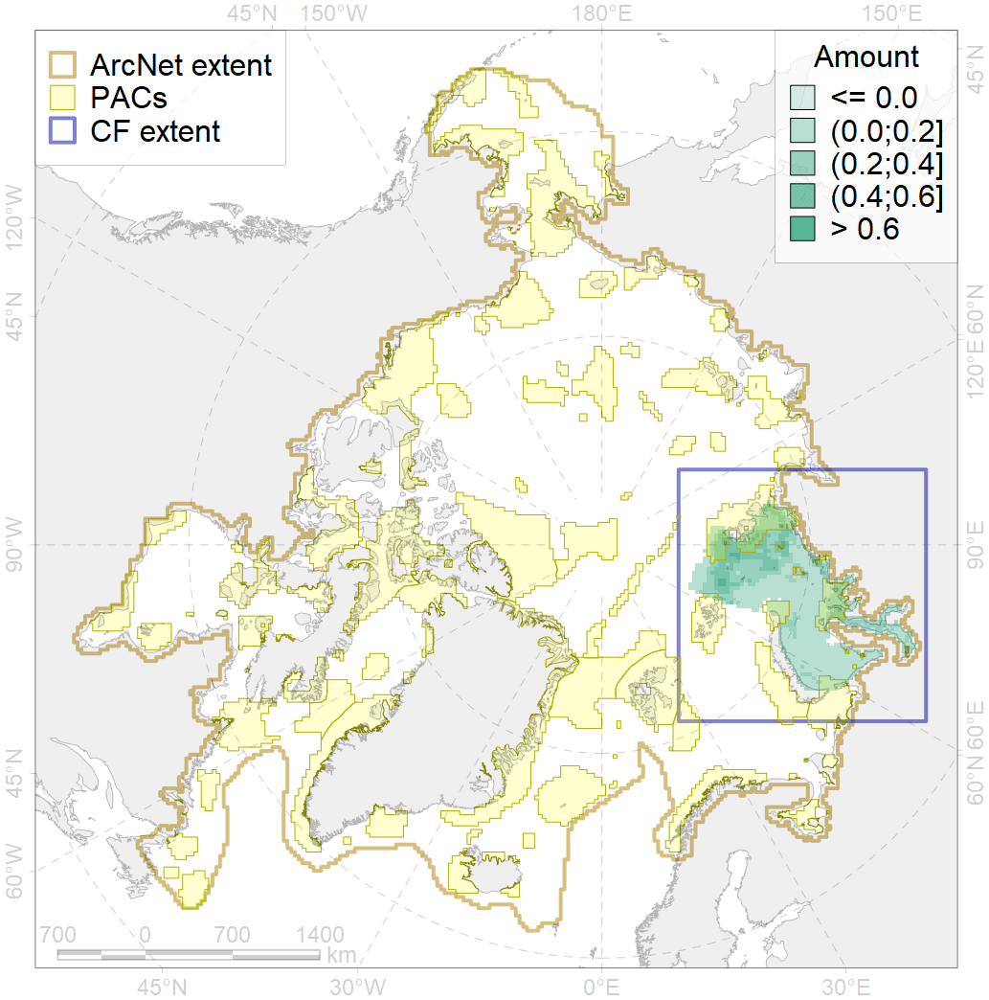
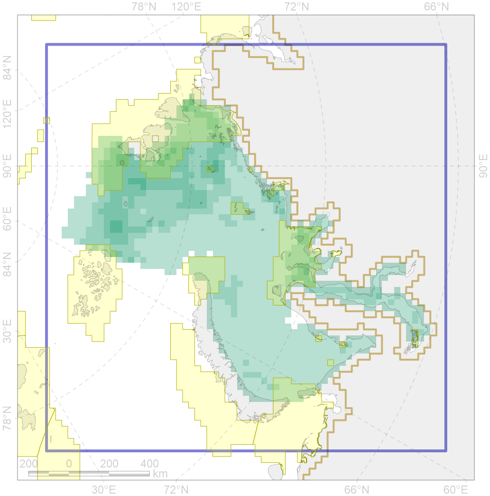

3038

| CF code | 3038 |
| CF name | Marginal Ice Zone distribution in July in the Kara Sea LME |
| Time Period | 1979 - 2017, adopted for recent changes |
| Source(s) | Lavielle M. 1999. Detection of multiple changes in a sequence of dependent variables. Stochastic Processes and their Applications, 83(1): 79–102. doi:10.1016/S0304-4149(99)00023-X. |
| Seasonality | July |
| Depth Horizon | 0 |
| Methodology | Strong C, Rigor IG. 2013. Arctic marginal ice zone trending wider in summer and narrower in winter. Geophysical Research Letters, 40(18): 4864–4868. doi:10.1002/grl.50928. Lavielle M. 1999. Detection of multiple changes in a sequence of dependent variables. Stochastic Processes and their Applications, 83(1): 79–102. doi:10.1016/S0304-4149(99)00023-X. |
| Use Restrictions | Joined terms of data licenses, copyrights, restrictions, terms of use, disclaimers, etc. No additional terms from data contributor. |
| Author Name | Nikita Platonov |
| Notes | |
| Scenario’s Target | 0.24 |
| Target Achievement | 0.308 (Scenario: 128.2%) |
| PAC | Share of the Total Amount within the PAC | Share of the Target Achievement for the ArcNet | PAC’s Contribution to the Target Achievement |
|---|---|---|---|
| 14 | 19.8%21.4% | 67.3%69.5% | 52.4%54.1% |
| 15 | 1.1%1.5% | 3.9%4.1% | 3.0%3.2% |
| 16 | 7.4%7.8% | 29.8%31.3% | 23.2%24.4% |
| 17 | 0.0%0.1% | 0.2%0.5% | 0.1%0.4% |
| 18 | 0.1%0.1% | 0.3%0.3% | 0.3%0.3% |
| 19 | 0.5% | 1.8% | 1.4% |
| 20 | 0.9% | 3.4% | 2.6% |
| 22 | 0.6% | 2.3% | 1.8% |
| inner | 30.4%32.9% | 108.9%113.2% | 84.8%88.1% |
| outer | 69.3%73.5% | 19.3%32.9% | 15.1%25.6% |
| † supplement values are for area consistence whereas principal values are for Accenter compatible gridded stats |